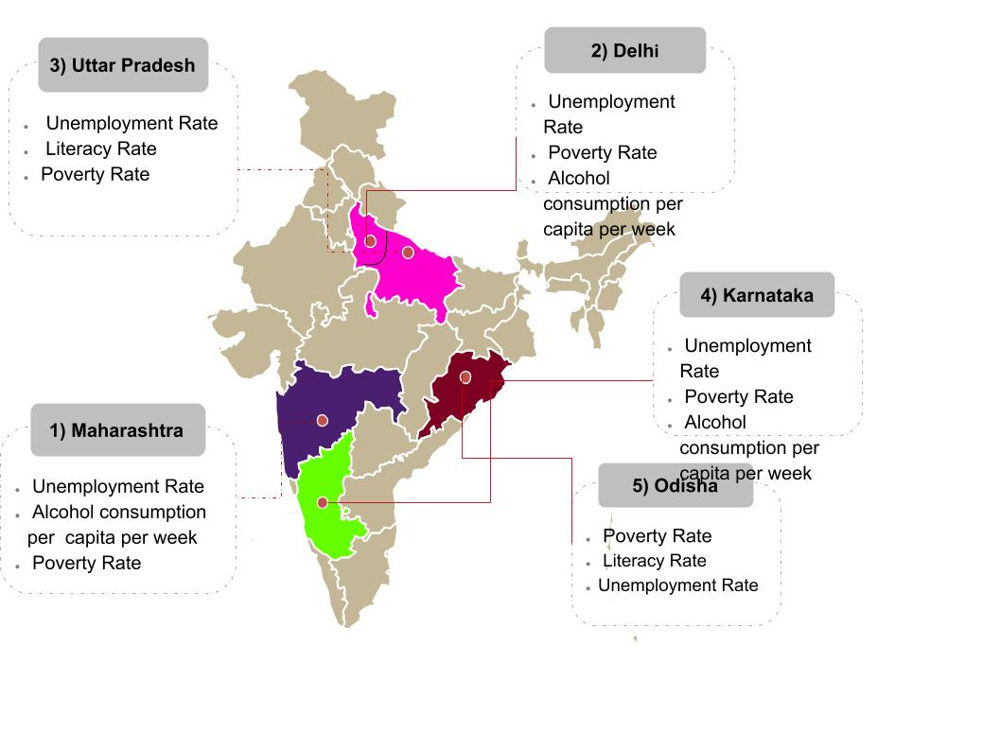

| MAP SHOWING HIGH DENSITY ZONES IN INDIA FOR ROBBERY CASES | LIST OF STATES ACCORDING TO ROBBERY CASES REGISTERED IN 2016 | ||
|  | 1> MAHARASHTRA 19.35 % | 2> DELHI 15.28 % | 3> UTTAR PRADESH 14.45 % |
| 4> KARNATAKA 6.92 % | 5> ODISHA 6.46 % | 6> TAMIL NADU 5.39 % | |
| 7> MADHYA PRADESH 5.14 % | 8> BIHAR 4.52 % | 9> GUJARAT 3.71 % | |
| 10> RAJASTHAN 3.11 % | 11> ASSAM 3.02 % | 12> KERALA 2.91 % | |
| 13> HARYANA 2.36 % | 14> JHARKHAND 1.77 % | 15> WEST BENGAL 1.51 % | |
| 16> CHHATTISGARH 1.22 % | 17> ANDHRA PRADESH 1.01 % | 18> PUNJAB 0.47 % | |
| 19> UTTARAKHAND 0.41 % | 20> MEGHALAYA 0.28 % | 21> ARUNACHAL PRADESH 0.20 % | |
| 22> JAMMU & KASHMIR 0.19 % | 23> NAGALAND 0.10 % | 24> TRIPURA 0.07 % | |
| 25> MANIPUR 0.05 % | 26> GOA 0.04 % | 27> HIMACHAL PRADESH 0.04 % | |
| 28> SIKKIM 0.02 % | 29> MIZORAM 0.01 % | ||